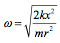
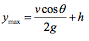

Catapults are any ballistic device designed to launch a long ranged projectile, with the damage being caused by impact rather than explosives or other means. The term 'catapult' comes from the ancient Greek words 'katta' meaning downwards and 'pallo' meaning hurl.
While catapult is an all-encompassing term, the traditional catapult design that most people think of is actually referred to as a mangonel or onager. With mangonel literally meaning 'engine of war', these machines were invented around 400 BC by the Romans. They were made up of a long wooden arm with a bowl at the end, and would be loaded by lowering a rope with a hook attached to the end. This hook would be connected to a pulling system (pulley compound or gear compound) to lower the arm from a natural 90 degree angle. Doing this stored elastic potential energy in the catapult by way of the tension in the ropes and arm. This tension would be stored in the same way as in a spring. Once lowered, a projectile would be loaded. The release of the arm would transfer the elastic potential energy into kinetic energy that was imparted to the projectile. Some later designs would utilise slings to hold the projectile and additional ways to impart energy such as a counterweight or men providing traction using ropes. These ideas would come into the limelight with the invention of the trebuchet.
Fig 1: A modern reconstruction of a mangonel.
Catapults in their various forms were used effectively as siege weapons from their invention in the 4th century BC up until the late medieval period, when advances in defensive construction rendered them largely ineffective, and the use of gunpowder became more prevalent. However, traditional catapults found use in world war one where they were sometimes used to launch hand grenades into enemy trenches from a distance. As recently as 2011, it was reported that a homemade catapult was used to deliver cannabis from Mexico across the border into the United States.
Using the basic spring constant equation:
where U is the potential energy, k is the elastic constant and x is the distance the object is pushed/pulled from its equilibrium position.
Unlike the ballistae example, the release of energy is not along a linear path, since the movement of the arm makes an arc with radius equal to its length. This means that some of the potential energy is transferred to rotational kinetic energy. The equation for the energy transfer is thus:
Moment of inertia for this example = ⅓mr2
Therefore:
Rearranging tells us that:
This is the angular velocity which is transferred to linear velocity when the arm comes to an abrupt halt (for simplicity we are ignoring other energy losses, for example by friction). The missile continues in the direction of its instantaneous linear velocity at that time.
Linear and rotational velocity are related by v=ωr and thus we see:
This would be a horizontal velocity, i.e. the horizontal component of the projectile, whilst the vertical component is zero.
Fig 2: Diagram of projectile being launched parallel to the ground.
From our earlier examination of projectile motion, we know that the time of flight would then be the time it takes the Earth's gravitational field to accelerate the missile to the ground. This will be given by:
and the range d is simply:
Another major factor of the success of a projectile is the launch angle. This could be manipulated on a mangonel by placing a block inside it to prevent the arm from reaching 90 degrees. Qualitatively, we can instantly see how this would increase the time of flight, as by giving it an angle, we give it a vertical velocity component (the missile's vertical velocity must be decelerated to 0 by g before it can hit ground).
Fig 3: A blocked mangonel, with a launch angle greater than horizontal.
This will increase the range d. However, by increasing vy, we decrease vx, so there must be an optimum angle at which we can make the most of both velocity components. This perfect angle has been proven to be 45°.
From the diagram above, we can see that when the arm is blocked, the angle θ between the vertical and the arm is the same as the angle between the launch velocity and the horizontal.
We can therefore determine the time of flight and range of the missile:
As a mangonel was often used to launch a missile over a wall (rather than at it), it is useful to know the trajectory's maximum height at a given angle. Denoting by h the original height above the ground from which the missile was launched, we find that:
The range at which this occurs is denoted by D:
where ty is the time at which the maximum height is reached.